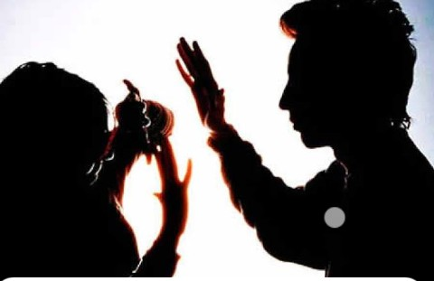

El feminicidio es un crimen de odio, entendido como el asesinato de una mujer por el hecho de ser mujer. El concepto define un acto de máxima gravedad, en un contexto cultural e institucional de discriminación y violencia de género, que suele ser acompañado por un conjunto de acciones de extrema violencia y contenido deshumanizante, como torturas, mutilaciones, quemaduras, enseñamiento y violencia sexual, contra las mujeres y niñas víctimas de este. El feminicidio representa el extremo de un continuum de terror antifemenino que incluye una amplia variedad de abusos verbales como físicos, tales como violación, tortura, esclavitud sexual, abuso sexual infantil incestoso o extrafamiliar, golpizas físicas y emocionales.
La violencia contra las mujeres tiene su origen en la desigualdad de género, es decir, en la posición de subordinación, marginalidad y riesgo en el cual éstas se encuentran respecto de los hombres.
La muerte violenta de las mujeres por razones de género, tipificada en nuestro sistema penal como feminicidio, es la forma más extrema de violencia contra la mujer y una de las manifestaciones más graves de la discriminación hacia ellas.
En nuestro Código Penal Federal el feminicidio se encuentra tipificado en el artículo 325, el cual establece lo siguiente:
“Comete el delito de feminicidio quien prive de la vida a una mujer por razones de género. Se considera que existen razones de género cuando concurra alguna de las siguientes circunstancias:
Comúnmente los homicidios que se cometen contra las mujeres no son investigados tomando en consideración que podrían tratarse de feminicidios.Por esta razón, el Modelo de protocolo latinoamericano de investigación de las muertes violentas de mujeres por razones de género recomienda que todas las muertes violentas de mujeres que en principio parecerían haber sido causadas por motivos criminales, suicidio y accidentes, deben analizarse con perspectiva de género, para poder determinar si hubo o no razones de género en la causa de la muerte y para poder confirmar o descartar el motivo de ésta.
En este mismo tenor se encuentra la sentencia de la Suprema Corte de Justicia de la Nación (SCJN) relacionada con el caso de Mariana Lima Buendía, la cual establece que en el caso de muertes de mujeres se debe:
A diferencia de otros tipos de asesinato, los feminicidios suelen ocurrir en el hogar como consecuencia de violencia de género. También se categorizan dentro de los crímenes de odio, dado que se dan en un contexto en el que lo femenino ha sido estigmatizado durante años. La palabra “feminicidio” está en disputa; hay autores que afirman que incluye cualquier asesinato cuya víctima sea una mujer, independientemente del género de quien lo cometa o de cuáles sean sus motivaciones. El feminicidio es la manifestación más extrema del abuso y la violencia de hombres hacia mujeres. Se produce como consecuencia de cualquier tipo de violencia de género, como pueden ser las agresiones físicas, la violación, la maternidad forzada o la mutilación genital.
La motivación para el crimen es una de las peculiaridades principales del feminicidio en relación a otros tipos de homicidio. Según Diana Russell, a quien se atribuye la popularización de la palabra “feminicidio” (“femicide” en inglés”), algunas de las motivaciones principales para estos asesinatos son la ira, el odio, los celos y la búsqueda de placer. Otras variables que Russell considera relevantes son la misoginia, el sentido de superioridad de género y la concepción de las mujeres como posesión. Estas variables se transmiten culturalmente y favorecen la violencia de los hombres hacia las mujeres. Por otro lado, los asesinatos de mujeres en el ámbito de la pareja también están ligados, estadísticamente, al consumo de alcohol o de otras drogas por parte del homicida, si bien estas acciones no pueden ser atribuidas solamente a un fenómeno puramente bioquímico.
| Porcentaje | Forma |
|---|---|
| 21% | Golpes (Trauma) |
| 17% | Impactos de bala |
| 16% | Apuñalamiento |
| 13% | Asfixiamiento |
| 12% | Extrangulación |
Como podemos observar en esta tabla, las formas en las que una mujer es asesinada corresponde con 21% los golpes y traumas, proseguido con un 17% impactos de bala (pueden ser de uno a varios), mientras que otras formas fueron correspondidas con 16% apuñalamiento, 13% asfixiamiento y 12% la extrangulación.
Naciones Unidas define este tipo de violencia como una conducta por parte del cónyuge o la pareja (actual o anterior) que cause daño físico, sexual o psicológico. Según las estadísticas mundiales, 1 de cada 3 mujeres en el mundo ha sufrido violencia física o sexual por parte de su pareja o expareja.
En el ámbito de la pareja, las cifras de violencia de las que más se habla son los feminicidios: asesinatos de mujeres por el hecho de serlo. Los últimos datos conocidos a nivel mundial, de 2017, dicen que 3 de cada 5 mujeres asesinadas lo fueron a manos de su pareja, expareja o algún miembro de su familia. África es el continente con mayor tasa de feminicidio, seguido de América.
Se estima que en todo el mundo, 87.000 mujeres mujeres fueron víctimas de feminicidios íntimos o familiares en el año 2017. Eso implica un total de 137 mujeres cada día. Ayuda en Acción desarrolla gran parte de sus proyectos en América Latina, donde hay varios países en los que la incidencia de los asesinatos de mujeres rozan las cifras de pandemia. El Salvador y Honduras son los países que presentan mayor prevalencia, aunque en números totales lo supera México o Brasil, según datos de CEPAL recogidos en 2018. En la región se registra un feminicidio cada dos horas y media.
Si nos centramos en las cifras de 2020, estas son las cifras de las mujeres asesinadas en cada uno de los países donde trabajamos en el continente americano: